Aufgabe 8
Bestimmen Sie die Koordinaten des Scheitelpunktes S
und der Nullstellen N.
y = x2 - 1,5
 S(0|)
S(0|)
Wie löse ich Matheaufgaben?
Quadratische Funktionen
Aufgabe 1 Was stimmt für die Parabel? y = f(x) = x2 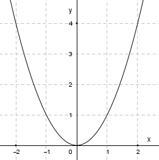
Aufgabe 2 Was stimmt für die Parabel? y = -x2
Aufgabe 3 Was stimmt für die Parabel? y = 2x2
Aufgabe 4 Was stimmt für die Parabel? y = -2x2
Aufgabe 5 Was stimmt für die Parabel? y = 0,5x2 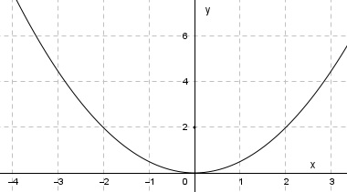
Aufgabe 6 Was stimmt für die Parabel? y = -0,5x2 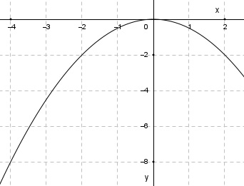
Aufgabe 7 Bestimmen Sie die Koordinaten des Scheitelpunktes S und der Nullstellen N. y = x2 + 1,5
Aufgabe 8 Bestimmen Sie die Koordinaten des Scheitelpunktes S und der Nullstellen N. y = x2 - 1,5
Aufgabe 9 Bestimmen Sie die Koordinaten des Scheitelpunktes S und der Nullstellen N. y = 2x2 + 1
Aufgabe 10 Bestimmen Sie die Koordinaten des Scheitelpunktes S und der Nullstellen N. y = -2x2 - 1 S(0|)
Aufgabe 11 Bestimmen Sie die Koordinaten des Scheitelpunktes S und der Nullstellen N. y = 0,2x2 - 2 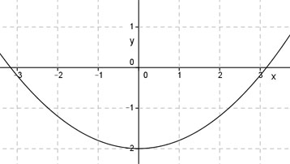
Aufgabe 12 Bestimmen Sie die Koordinaten des Scheitelpunktes S und der Nullstellen N. y = -0,2x2 + 2 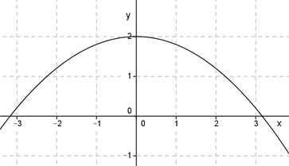 S(|2)
Aufgabe 13 Wie groß ist c, wenn eine Parabel der Form y = x2 + c durch den Punkt (0|1) geht?
Aufgabe 14 Wie groß ist c, wenn eine Parabel der Form y = x2 + c durch den Punkt (2|0) geht? c =
Aufgabe 15 Liegt der Punkt (1|-3,5) auf dem Graphen der Funktion y = x2 - 4,5?
Aufgabe 16 Liegt der Punkt (-1|-5,5) auf dem Graphen der Funktion y = x2 - 4,5?
Aufgabe 17 In welchen Punkten schneiden sich die Parabel y = x2 + 1 und die Gerade y = x + 3? P1(|2)
Aufgabe 18 In welchen Punkten schneiden sich die Parabel y = x2 - 5 und die Gerade y = -x + 1?
Aufgabe 19 Welchen Wert muss x in der Funktion y = x2 annehmen, um für y das 9-fache von 5,76 zu erhalten? x muss = ± sein.
Aufgabe 20 Wie groß ist a, wenn eine Parabel der Form y = ax2 durch den Punkt (1|4) geht?
Aufgabe 21 Wie groß ist a, wenn eine Parabel der Form y = ax2 durch den Punkt (-2|8) geht? a =
Aufgabe 22 Wie groß ist a, wenn eine Parabel der Form y = ax2 durch den Punkt (3|-9) geht?
Aufgabe 23 Eine Parabel hat ihren Scheitelpunkt in P(0|-2) und geht durch Q(4|6). Wie lautet ihre Funktionsgleichung? y = 0,5x2 - cm
Aufgabe 24 Eine Parabel der Form y = ax2 geht durch den Punkt (0|0). Liegen die Punkte P(-3|2) und Q(6|8) auf dieser Parabel?
Aufgabe 25 Bestimmen Sie die Koordinaten des Scheitelpunktes S und der Nullstellen N der folgenden Funktion. y = x2 + 2x S(-1|)
Aufgabe 26 Bestimmen Sie die Koordinaten des Scheitelpunktes S und der Nullstellen N der folgenden Funktion. y = x2 - 3x
Aufgabe 27 Bestimmen Sie die Koordinaten des Scheitelpunktes S und der Nullstellen N der folgenden Funktion. y = 2x2 - 4x S(1|-2) N1(0|0) , N2(|0)
Aufgabe 28 Bestimmen Sie die Koordinaten des Scheitelpunktes S und der Nullstellen N der folgenden Funktion. y = -0,5x2 + 3x
Aufgabe 29 Bestimmen Sie die Koordinaten des Scheitelpunktes S und der Nullstellen N der folgenden Funktion. y = (x - 9)2 S(9|0) N1,2(|0)
Aufgabe 30 Bestimmen Sie die Koordinaten des Scheitelpunktes S und der Nullstellen N der folgenden Funktion. y = (x + 2)2
Aufgabe 31 In welchen Punkten schneiden sich die Parabel y = x2 + 2x und die Gerade y = x + 1? P1(-1,62|)
Aufgabe 32 In welchen Punkten schneiden sich die Parabel y = 2x2 - 3x und die Gerade y = -x + 2?
Aufgabe 33 Die Funktion y = (x - d)2 nimmt für x = -1 und x = 9 den gleichen Funktionswert an. Für welches x ist der Funktionswert am kleinsten? Für x =
Aufgabe 34 Welche Funktion y = (x - d)2 hat ihren Scheitelpunkt bei (-2|0)?
Aufgabe 35 Die Funktion y = x2 wird um 5 Einheiten nach links verschoben. Wie lautet die Funktionsgleichung der verschobenen Funktion? y = x2 + x + 25
Aufgabe 36 Die Funktion y = x2 wird um 2 Einheiten nach rechts verschoben. Wie lautet die Funktionsgleichung der verschobenen Funktion?
Aufgabe 37 Bestimmen Sie die Koordinaten des Scheitelpunktes S und der Nullstellen N. y = (x - 6)2 + 1 S(|1)
Aufgabe 38 Bestimmen Sie die Koordinaten des Scheitelpunktes S und der Nullstellen N. y = (x - 4)2 - 2
Aufgabe 39 Bestimmen Sie die Koordinaten des Scheitelpunktes S und der Nullstellen N. y = x2 + 10x + 1 S(|-24)
Aufgabe 40 Bestimmen Sie die Koordinaten des Scheitelpunktes S und der Nullstellen N. y = x2 - 12x + 4
Aufgabe 41 Bestimmen Sie die Koordinaten des Scheitelpunktes S und der Nullstellen N. y = x2 - 6x - 10 S(2|-19) N1(|0)
Aufgabe 42 Bestimmen Sie die Koordinaten des Scheitelpunktes S und der Nullstellen N. y = x2 + 9x - 1
Aufgabe 43 Eine quadratische Funktion der Form y = x2 + bx + c nimmt an der Stelle x1 = 5 den kleinsten Funktionswert y1 = 8 an. Wie groß ist der Funktionswert an der Stelle x = 6? y =
Aufgabe 44 Eine quadratische Funktion der Form y = x2 + bx + c nimmt an der Stelle x1 = -6 den kleinsten Funktionswert y1 = 1 an. Wie groß ist der Funktionswert an der Stelle x = 0?
Aufgabe 45 Bestimmen Sie die quadratische Funktion der Form y = x2 + bx + c, die durch die Punkte P1(2|4) und P2(-2|0) geht. y = x2 + x -
Aufgabe 46 Bestimmen Sie die quadratische Funktion der Form y = x2 + bx + c, die durch die Punkte P1(1|3) und P2(0|2) geht.
Aufgabe 47 Bestimmen Sie die quadratische Funktion der Form y = x2 + bx + c, die durch die Punkte P1(-3|0) und P2(2|0) geht. y = x2 + x - 3
Aufgabe 48 Bestimmen Sie die quadratische Funktion der Form y = x2 + bx + c, die durch die Punkte P1(5|-5) und P2(2|0) geht.
Aufgabe 49 In welchen Punkten schneiden sich die Parabel y = x2 + 8x + 3 und die Parabel y = x2 -2x + 1? Im Punkt (|1,44)
Aufgabe 50 In welchen Punkten schneiden sich die Parabel y = x2 + 7x + 1 und die Parabel y = x2 + 1?
Aufgabe 51 Bestimmen Sie die Koordinaten des Extremwertes für y = x2 - x + 1 S(|0,75)
Aufgabe 52 Bestimmen Sie die Koordinaten des Extremwertes für y = -2x2 + 4x
Aufgabe 53 Bestimmen Sie die Funktionsgleichung der Parabel, deren Scheitelpunkt in (0|2) liegt und die durch den Punkt (3|6) geht. 4 y = ---x2 + |0) 9
Aufgabe 54 Bestimmen Sie die Funktionsgleichung der Parabel, deren Scheitelpunkt in (1|-2) liegt und die durch den Punkt (2|6) geht.
Aufgabe 55 Bestimmen Sie die Funktionsgleichung der Parabel der Form y = ax2 + b, die durch die Punkte P1(-3|2) und P2(1|-6) geht. y = x2 -
Aufgabe 56 Bestimmen Sie die Funktionsgleichung der Parabel der Form y = ax2 + b, die durch die Punkte P1(2|-1) und P2(6|-17) geht.
Aufgabe 57 Wie lautet die Funktionsgleichung der dargestellten verschobenen Normalparabel? y = x2 - x + 11
Aufgabe 58 Wie lautet die Funktionsgleichung der dargestellten verschobenen Normalparabel?

Aufgabe 59 Wie lautet die Funktionsgleichung der dargestellten verschobenen Normalparabel?
y = x2 + x - 1
Aufgabe 60 Ermitteln Sie aus der Wertetabelle die zu einer quadratischen Funktion gehörige Funktionsgleichung: x -5 -4 -3 -2 -1 0 y 4 1 0 1 4 9
Aufgabe 61 Eine Parabel hat die Funktionsgleichung y = x2 + 6x. Bestimmen Sie ihre Scheitelpunktkoordinaten? Bestimmen Sie ihre Nullstellen. Die Parabel wird um 5 Einheiten nach oben und um 5 nach rechts verschoben. Wie lautet die Gleichung der verschobenen Parabel? y = x2 - x Die verschobene Parabel wird an der x-Achse gespiegelt. Wie lautet die Gleichung der gespiegelten Parabel?
Aufgabe 62 Bestimmen Sie den Scheitelpunkt der Parabel y = x2 - 2x - 25. Wie viel Einheiten über dem Scheitelpunkt liegt eine 20 Einheiten lange Parallele zur x-Achse? Bestimmen Sie die Koordinaten der Punkte, die einen Abstand von 10 Einheiten zur x-Achse haben.
Aufgabe 63 Bestimmen Sie die Koordinaten des Scheitelpunktes S und der Nullstellen N. y = 2x2 + 4x + 6? S(-1|), keine Nullstellen.
Aufgabe 64 Bestimmen Sie die Koordinaten des Scheitelpunktes S und der Nullstellen N. y = -x2 + 2x - 4?
Aufgabe 65 Bestimmen Sie die Koordinaten des Scheitelpunktes S und der Nullstellen N. y = -0,8x2 + 0,2x + 4? S(|4,0125)
Aufgabe 66 Bestimmen Sie die Koordinaten des Scheitelpunktes S und der Nullstellen N. 3 y = ---x2 + 9x + 6? 4
Aufgabe 67 Bestimmen Sie die Koordinaten des Scheitelpunktes S und der Nullstellen N. y = -0,5x2 + x + 8? S(1|8,5) , N1(-3,1|0) , N2(|0)
Aufgabe 68 Bestimmen Sie die Koordinaten des Scheitelpunktes S und der Nullstellen N. 1 y = ---x2 + 7x + 6? 7
Aufgabe 69 Bestimmen Sie die Koordinaten des Scheitelpunktes S und der Nullstellen N. 2 2 1 y = --- x2 - --- x + ---? 3 3 2 1 S(|---) 3
Aufgabe 70 An welchen Stellen x schneiden sich die beiden Parabeln y = 2x2 - 3 und y = 2x2 + 2x + 1? 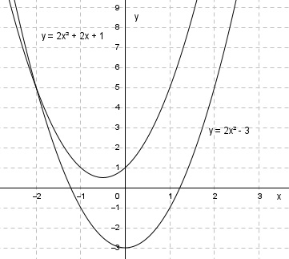
Aufgabe 71 An welchen Stellen x schneiden sich die beiden Parabeln y = -4x2 + 8x - 10 und y = -4x2 + 3x? Nur an der Stelle x =
Aufgabe 72 Wie groß ist a bei einer Funktion der Form y = a(x - b)2 + c,wenn sie den Scheitelpunkt bei (1|4) hat und durch den Punkt (3|0) geht?
Aufgabe 73 Wie groß ist a bei einer Funktion der Form y = a(x - b)2 + c, wenn sie den Scheitelpunkt bei (-2|1) hat und durch den Punkt (-1|-1) geht? a =
Aufgabe 74 Wie groß sind a, b und c bei einer Funktion der Form y = ax2 + bx + c, wenn ihr Graph durch die Punkte P1(0|1), P2(1|3) und P3(-1|3) geht?
Aufgabe 75 Wie groß sind a, b und c bei einer Funktion der Form y = ax2 + bx + c, wenn ihr Graph durch die Punkte P1(1|2), P2(0|4) und P3(-1|2) geht? a = -2, b = , c = 4
Aufgabe 76 Wie lautet die Funktionsgleichung einer Parabel der Form y = ax2 + bx + c, wenn ihr Graph durch die Punkte P1(1|17), P2(-4|82) und P3(2|22) geht?
Aufgabe 77 Wie lautet die Funktionsgleichung einer Parabel der Form y = ax2 + bx + c, wenn ihr Graph durch die Punkte P1(1|4), P2(-1|8) und P3(3|8) geht? y = x2 - x
Aufgabe 78 Wie lautet die Funktionsgleichung einer Parabel der Form y = ax2 + bx + c, wenn ihr Graph durch die Punkte P1(2|6), P2(-3|-4) und P3(1|0) geht?
Aufgabe 79 Wie lautet die Funktionsgleichung einer Parabel der Form y = ax2 + bx + c, wenn ihr Graph durch die Punkte P1(1,5|-2,75), P2(3,2|-8,36) und P3(-2,1|28,21) geht? y = x2 - x
Aufgabe 80 An welchen Stellen x schneiden sich die Parabel y = x2 - 7x + 20 und die Gerade y = 5x - 7? An den Stellen x1 = 3, x2 = )
Aufgabe 81 An welchen Stellen x schneiden sich die Parabel y = x2 + 18x + 68 und die Gerade y = 40x - 142?

Aufgabe 82 An welchen Stellen x schneiden sich die Parabel y = x2 - 11x + 53 und die Gerade y = 3x + 4? Berührüunkt an der Stelle x =
Aufgabe 83 An welchen Stellen x schneiden sich die Parabel y = 4x2 - 28x + 55 und die Gerade y = 2,4x - 2,76? 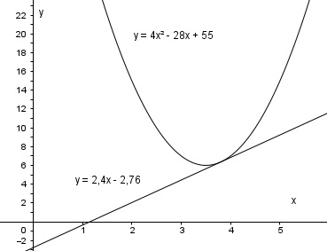
Aufgabe 84 Bestimmen Sie die Koordinaten des Scheitelpunktes S und der Nullstellen einer Parabel der Form y = ax2 + bx + c, wenn ihr Graph durch die Punkte P1(1|0), P2(-1|0) und P3(2|1) geht? 1 S(|- ---) 3
Aufgabe 85 Bestimmen Sie die Koordinaten des Scheitelpunktes S und der Nullstellen einer Parabel der Form y = ax2 + bx + c, wenn ihr Graph durch die Punkte P1(0|-2), P2(-1|1) und P3(2|6) geht?
Aufgabe 86 Bestimmen Sie die Funktionsgleichung der dargestellten Parabel. 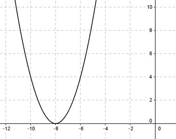 y = (x + )2
Aufgabe 87 Bestimmen Sie die Funktionsgleichung der dargestellten Parabel. 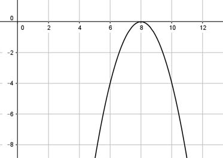
Aufgabe 88 Bestimmen Sie die Funktionsgleichung der dargestellten Parabel. 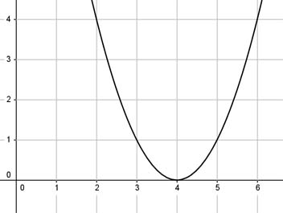 y = (x - )2
Aufgabe 89 Bestimmen Sie die Funktionsgleichung der dargestellten Parabel. 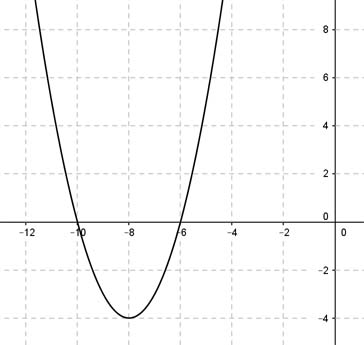
Aufgabe 90 Bestimmen Sie die Funktionsgleichung der dargestellten Parabel. 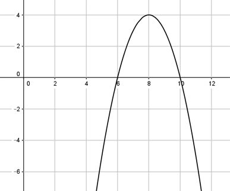 y - (x - )2 + 4
Aufgabe 91 Bestimmen Sie die Funktionsgleichung der dargestellten Parabel. 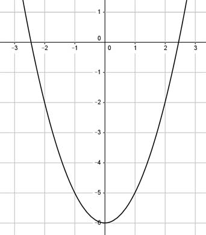
Aufgabe 92 Bestimmen Sie die Funktionsgleichung der dargestellten Parabel. 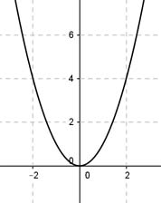 y =
Aufgabe 93 Bestimmen Sie die Funktionsgleichung der dargestellten Parabel.

Aufgabe 94 Bestimmen Sie die Funktionsgleichung der dargestellten Parabel.
y = 0,5(x - 4)2 -
Aufgabe 95 In welchen Punkten schneiden sich die beiden Parabeln? y = -3x2 + 5 und y = x2 + 1
Aufgabe 96 In welchen Punkten schneiden sich die beiden Parabeln? y = -5x2 - 20x - 23 und y = 0,75x2 + 3x P(-2|)
Aufgabe 97 In welchen Punkten schneiden sich die beiden Parabeln? y = -3,5x2 - 14x - 9 und y = 0,5x2 + 2x + 3
Aufgabe 98 Eine Parabel hat den Scheitelpunkt S(2|4) und schneidet die x-Achse an der Stelle 6. An welcher Stelle schneidet sie die x-Achse noch? An der Stelle x =
Aufgabe 99 Der Scheitelpunkt einer Parabel liegt oberhalb der x-Achse und bildet mit den Punkten (4|0) und (8|0) ein rechtwinkliges Dreieck. Berechnen Sie die Koordinaten des Scheitelpunktes.
Aufgabe 100 Eine Parabel geht durch den Punkt (1|1), ist um den Faktor -3 gestreckt, und ihre Symmetrieachse geht durch x = -1. Wo liegt ihr Scheitelpunkt? S(-1|)
Aufgabe 101 Der Graph einer Parabel geht durch die Punkte x -4 -3 -2 -1 0 1 2 y 18 8 2 0 2 8 18 Wie lautet ihre Funktionsgleichung?
Aufgabe 102 Wie lautet die Funktionsgleichung einer Normalparabel, die um 4 Einheiten nach unten verschoben wird? y = x2
Aufgabe 103 Wie lautet die Funktionsgleichung einer Normalparabel, die um 3 Einheiten nach links verschoben wird?
Aufgabe 104 Wie lautet die Funktionsgleichung einer Normalparabel, die um 2 Einheiten nach rechts und um eine Einheit nach unten verschoben wird? y = (x - 2)2
Aufgabe 105 Der Scheitelpunkt der Parabel y = 2x2 - 2x + 1 wird in den Punkt (5|3) verschoben. Bestimmen Sie die Funktionsgleichung der verschobenen Parabel.
Anwendungsaufgaben
Aufgabe 106 Ein Bauer will mit 17 m Zaun ein möglichst großes, rechteckiges Stück einer Wiese einzäunen und dabei eine Scheunenwand als Begrenzung verwenden. Wie groß sind die kürzere Seite l des Zauns und die Größe der eingezäunten Fläche A? l = m
Aufgabe 107 Für welche Zahlen, von denen eine um 2 größer ist als die andere, ist ihr Produkt am kleinsten?
Aufgabe 108 Für welche Zahlen, von denen eine um 4 kleiner ist als die andere, ist ihr Produkt am kleinsten? Kleinere =
Aufgabe 109 Für welche Zahl ist das Produkt aus ihrem 3fachen und der um 4 vergößerten am kleinsten?
Aufgabe 110 Für welche Zahl ist das Produkt aus ihrem um 4 vergrößerten 4fachen und der um 3 kleineren Zahl am kleinsten? Zahl =
Aufgabe 111 Für welche Zahl ist das Produkt aus ihrer Hälfte und der um 10 größeren Zahl am kleinsten?
Aufgabe 112 Die Hundewiese soll in der Ecke zwischen Haus und Garage mit einem 13 m langen Zaun angelegt werden. Welche größte Fläche A entsteht? 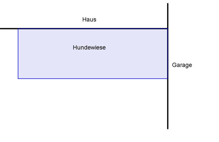 A = m²
Aufgabe 113 Für welche Länge x wird die blaue Fläche A am kleinsten? 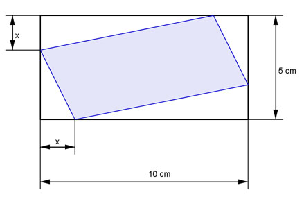
Aufgabe 114 Berechnen Sie die Koordinaten des Punktes P auf der Geraden y = -0,75x + 3, wenn das blaue Rechteck A am größten sein soll. P(2|)
Aufgabe 115 Eine Firma verkauft monatlich 1 000 Bauteile für 10 €/Stück. Eine Marktanalyse hat ergeben, dass sie 20 Bauteile pro Monat mehr verkaufen kann, wenn der Stückpreis um 0,1 € sinkt. (40 Bauteile bei 0,2 €/Stück usw.) Bei welcher Preissenkung sind die Einnahmen am größten?
Aufgabe 116 Ein Zoo hat bei einem Eintrittspreis von 8 € durchschnittlich 240 Besucher. Wird der Eintrittspreis um 0,5 € erhöht, dann sinkt die Besucherzahl um 10, erhöht man um 1 € sinkt sie um 20. Bei welchem Eintrittspreis x sind die Einnahmen am größten? Bei einem Eintrittspreis von €.
Aufgabe 117 In welche Summanden muss man die Zahl 24 zerlegen, damit die Summe der Quadrate der Summanden am kleinsten wird?
Aufgabe 118 Wie groß ist der maximale Flächeninhalt A eines Rechtecks mit einem Umfang von 16 cm? A = cm²
Aufgabe 119 Ein Rechteck hat eine Länge von 10 cm und eine Breite von 4 cm. Die Länge soll um den Betrag x verkürzt und die Breite um x verlängert werden. Bei welcher Änderung x entsteht das größte Rechteck?
Aufgabe 120 Wie groß ist die größtmögliche blaue Rechteckfläche A? 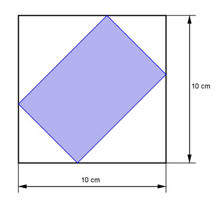 A = cm²
Aufgabe 121 Eine Parallele zur y-Achse schneidet die Parabel y = 0,5x2 + 4 im Punkt P und die Gerade y = 2x in Q. An welcher Stelle x wird die Strecke PQ am kleinsten?
Aufgabe 122 Wie groß ist die größtmögliche blaue Grundfläche A des Behälters, wenn seine Kanten aus 8 m Winkelstahl hergestellt werden? 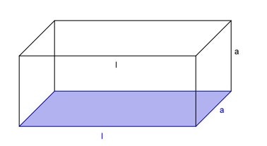 A = cm²
Aufgabe 123 Das Blumenbeet wird mit Platten umrandet. 1 m² Blumenbeet kostet 20 €, 1 m² Platten 17,50 €. Die Kosten für die Einfassung des Beetes von 5 € pro Meter hat der Bauherr angespart. Für welche Randbreite x sind die weiteren Kosten K am geringsten?

Aufgabe 124 Die Leistung L in W einer Turbine hängt von der Drehzahl n in U/min so ab: L = 300 n - 0,8 n2. Bei welcher Drehzahl ist die Leistung am größten? Bei n = U/min.
Aufgabe 125 Eine Firma stellt ein Gerät her, das sie für 35 € pro Stück verkauft. Bei der Herstellung entstehen jeden Tag feste Kosten in Höhe von 1 500 €. Werden am Tag x Stück produziert, hat sie weitere Kosten in Höhe von 0,05 x2. Bei welcher Tagesproduktion entsteht der höchste Gewinn?
Aufgabe 126 Eine Firma hat bei der Herstellung eines Bauteils jeden Tag feste Kosten von 500 €, 10 € Material- und Lohnkosten pro Stück und weitere Stückkosten von 0,004 x2. Der Verkaufspreis beträgt 15 € pro Stück. Wie hoch ist der Tagesgewinn, wenn er mit 40% versteuert wird? Er ist € hoch.
Aufgabe 127 Für welche Länge x wird die blaue Dreiecksfläche am größten? 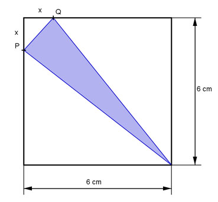
Aufgabe 128 Ein Züchter will für seine 3 Kaninchenrassen aus 20 m Maschendraht die 3 getrennten Gehege abgrenzen. Für welches a wird die Gesamtfläche am größten? 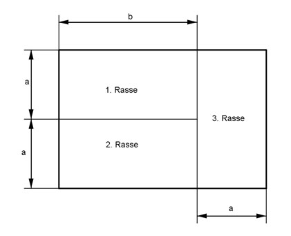 Für a = m.
Aufgabe 129 Das Fenster hat einen Umfang von U = 6 m. Wie groß muss man x wählen, damit die Fläche am größten wird?
Aufgabe 130 Der Eigentümer will das dreieckige Grundstück bebauen. Es liegt zwischen den beiden, sich rechtwinklig kreuzenden Straßen. Wie groß wird die Fläche A des rechtwinkligen blauen Bauplatzes maximall? 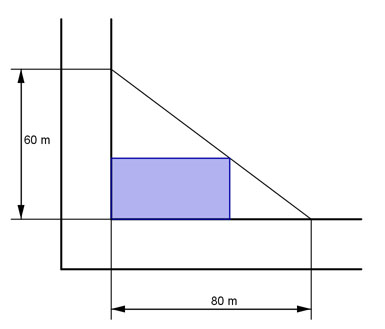 A = m2
Aufgabe 131 Wie hoch ist der parabelförmige Brückenbogen? 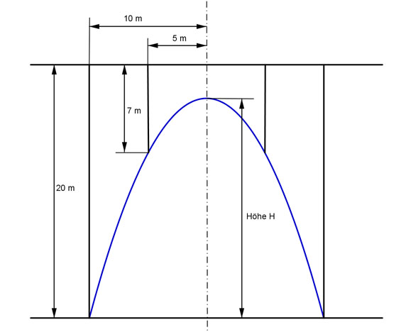
Aufgabe 132 Die Gesamtlänge aller Kanten beträgt 920 cm. Für welche Längen a und b ist die blaue Fläche am größten?
Für a = 57,5 cm, b = cm
Aufgabe 133 Die Höhe des roten Rechtecks ist dreimal so groß wie seine Breite. Für welche Höhe ist die Gesamtfläche der eingefärbten Rechtecke am kleinsten? 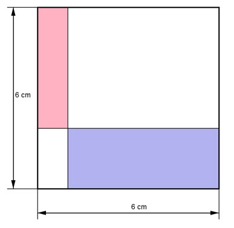
Aufgabe 134 Eine Kugel bewegt sich beim Kugelstoß auf einer parabelförmigen Bahn. Diese Parabel hat die Funktionsgleichung y = -0,03x2 + x + 1,7. Wie weit fliegt die Kugel, wenn sie in 1,70 m Höhe die Hand verlässt? Sie fliegt m weit.
Aufgabe 135 Trifft der Ball in den Korb, wenn seine Flugbahn eine Parabel der Form y = ax2 + b ist?

Aufgabe 136 Ein 36 m hohes Gebäude hat, von vorne betrachtet, ein parabelförmiges Dach, das bis zum Boden reicht und dort 70 m breit ist. Wie breit ist ein Zwischenstockwerk in einer Höhe von 12,7 m?
Aufgabe 137 Aus einem Springbrunnen tritt das Wasser in 25 cm Höhe auf einer parabelförmigen Bahn mit der Funktionsgleichung y = -0,25x2 + 2x + 0,25 aus. In welcher Entfernung zu den Düsentreffen die Wasserstrahlen auf? In einer von m.
Aufgabe 138 Ein symmetrischer, parabelförmiger Brückenbogen hat eine Spannweite von 196 m und einen höchsten Punkt bei 107 m. Wie lautet seine Funktionsgleichung?
Aufgabe 139 Der Bogen einer Hängebrücke ist parabelförmig mit y = 0,001x2 und hat eine Höhe von 92 m. Wie groß ist ihre Spannweite S? S = m
Aufgabe 140 Welchen Flächeninhalt A hat das größtmögliche Rechteck, das man aus dem Blechteil abtrennen kann? 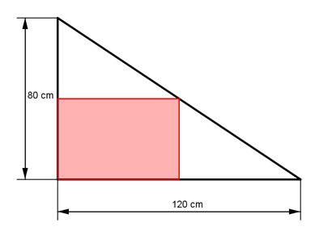
Aufgabe 141 Eine Zeitschrift kostet 3,50 € pro Stück, 5% davon sind Gewinn. Der wöchentliche Absatz beträgt 240 000 Exemplare. Man hat herausgefunden, dass man pro 0,02 € Preissenkung 1 500 Exemplare mehr verkaufen kann. Bei welcher Senkung ist der Gewinn am größten? Bei einer von €.
Aufgabe 142 Eine neue Maschine hat Entwicklungskosten von 8 000 000 € verursacht. Bei der Herstellung entstehen Stückkosten von 500 €. Der Verkaufspreis V ist von der verkauften Geräteanzahl x abhängig und beträgt 3 300 - 2x. Wie hoch ist der monatliche Gewinn G, wenn 10% der Herstellungskosten berücksichtigt werden?
Aufgabe 143 Ein Tennisplatz ist 24 m lang. Ein Spieler trifft einen Ball 5 m vor dem Netz, der Ball überquert auf einer parabelförmigen Bahn in maximaler Höhe von 1,3 m das Netz und trifft 0,5 m vor der Grundlinie auf. In welcher Höhe hat der Spieler den Ball getroffen? In einer von m.
zurück